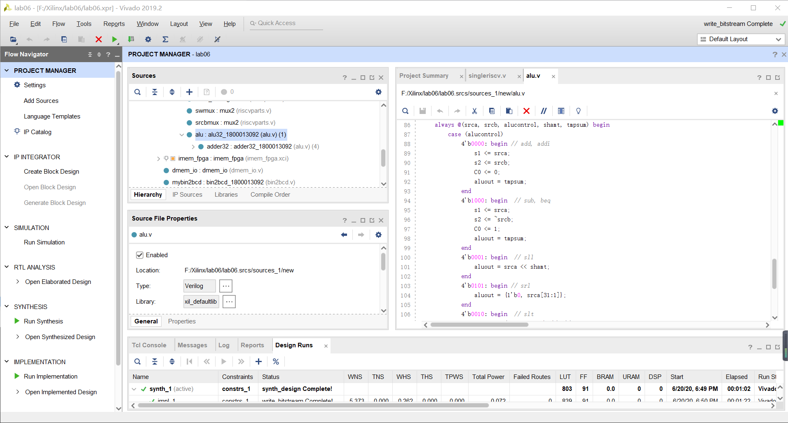
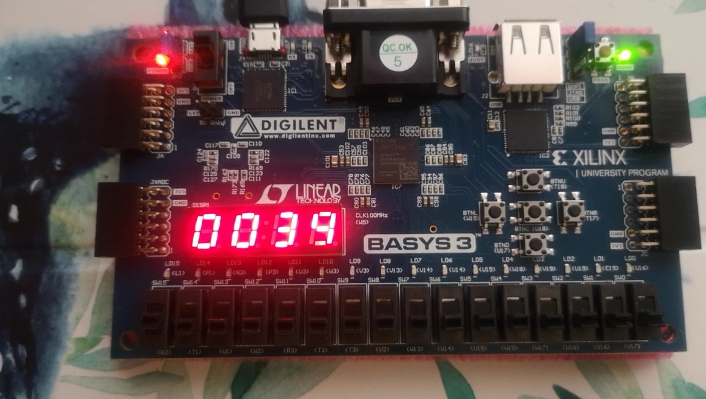
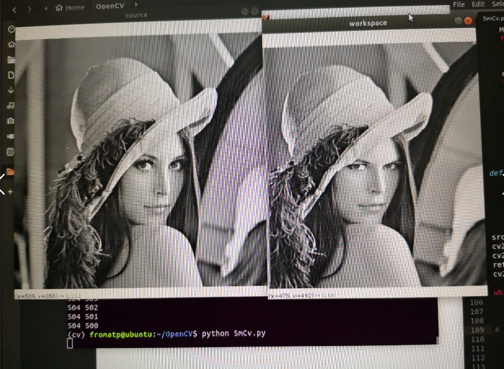

About Me
Information
Name: Yuxuan Zhang
School: Peking University
Major: Computer Science
Personal Experience
 Above shows one of my assignments
I use Verilog to complete a single RISCV processor
then write the assembly code that can do mathmatical operations such as +,-,*
and finally write them to a FPGA board.

That was my first time to perform Seam Carving...
On the left is the original picture, and right is the result.
When my friends and I saw the picture, we laughed for all evening(:P)
Curious about how I did it ???
U just need to change a "<" into ">", make your program delete the most important lines in the picture....
Personal Interests
If I were free, I would rather stay at home by myself than go out to take part in social activities.
So what I am interested in are those can kill my time alone.
Handicrafts such as painting, carving, origami are my favorites
Also, I'm addicted in indie games such as Hollow Knight, Cuphead, The Witcher, etc.
go to my gallery to see some of my works!